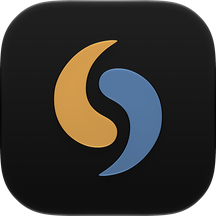

NabuKey Support
Contact
DiscordAsk a question, report a bug, talk with other users.
In the appMenu, Feature requests: suggest a feature or vote for one. The developer reads every request.
Install the keyboard
- Open Settings, General, Keyboard, Keyboards, Add New Keyboard, and choose NabuKey.
- Tap NabuKey in that list and turn on Allow Full Access, which dictation, the clipboard and sounds need. See the privacy policy for what it allows.
- In any app, hold the globe key and choose NabuKey.
Common questions
- Dictation opens the NabuKey app. iOS does not let a keyboard use the microphone by itself. NabuKey opens its app for a moment to listen, then you return with the chevron at the top left and your text is typed.
- Restore my purchase. In the app, Settings, My plan, Restore purchases.
- Some effects are missing on my iPhone. On iPhones with less memory, the heaviest effects are hidden so the keyboard stays fast and stable.
- The keyboard does not appear. Check that it is added in Settings, General, Keyboard, Keyboards, then restart the app you are typing in.
Assistance NabuKey
Contact
DiscordPoser une question, signaler un bug, échanger avec les autres utilisateurs.
Dans l'appMenu, Feature requests : proposer une fonction ou voter pour une demande. Le développeur lit chacune d'elles.
Installer le clavier
- Ouvrez Réglages, Général, Clavier, Claviers, Ajouter un clavier, et choisissez NabuKey.
- Touchez NabuKey dans cette liste et activez Autoriser l'accès complet, nécessaire à la dictée, au presse papiers et aux sons. Ce qu'il permet est expliqué dans la politique de confidentialité.
- Dans n'importe quelle app, maintenez la touche globe et choisissez NabuKey.
Questions fréquentes
- La dictée ouvre l'app NabuKey. iOS ne laisse pas un clavier utiliser le micro seul. NabuKey ouvre son app un instant pour écouter, puis vous revenez avec le chevron en haut à gauche et votre texte s'écrit.
- Restaurer mon achat. Dans l'app, Réglages, Mon offre, Restaurer mes achats.
- Certains effets manquent sur mon iPhone. Sur les iPhone qui ont moins de mémoire, les effets les plus lourds sont masqués pour que le clavier reste rapide et stable.
- Le clavier n'apparaît pas. Vérifiez qu'il est ajouté dans Réglages, Général, Clavier, Claviers, puis relancez l'app dans laquelle vous écrivez.